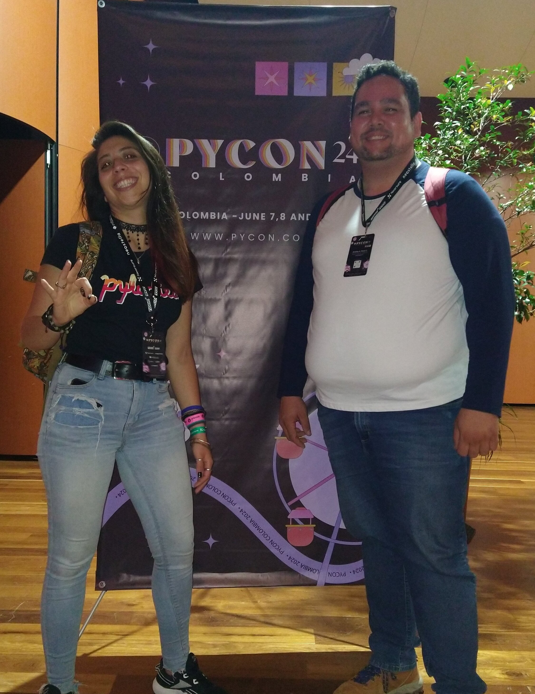
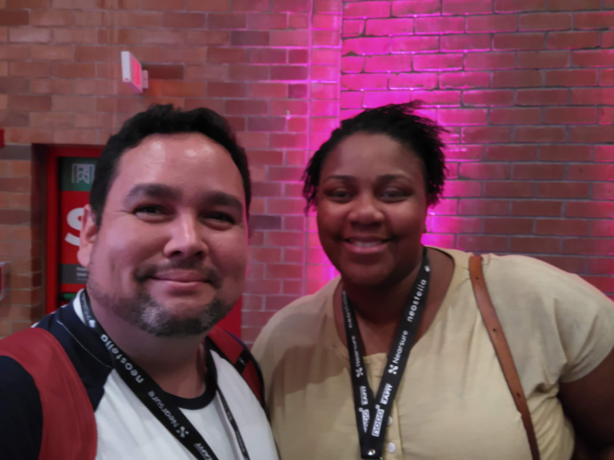
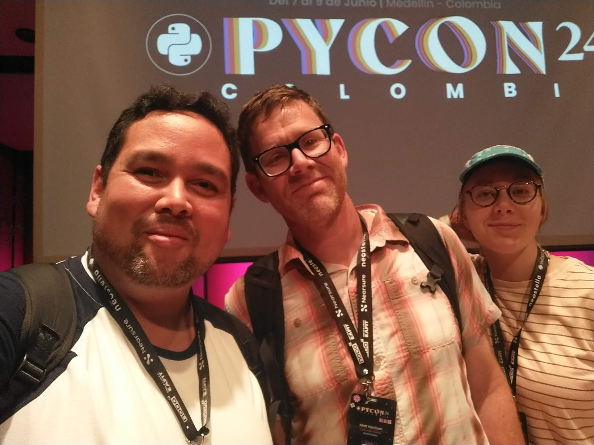
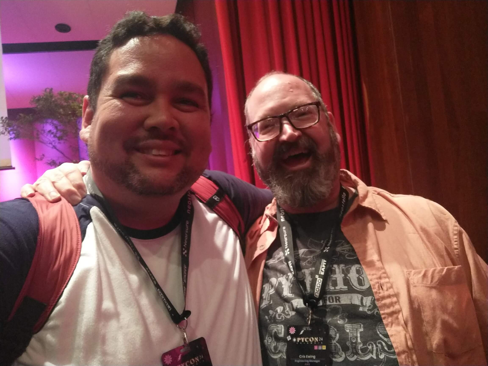
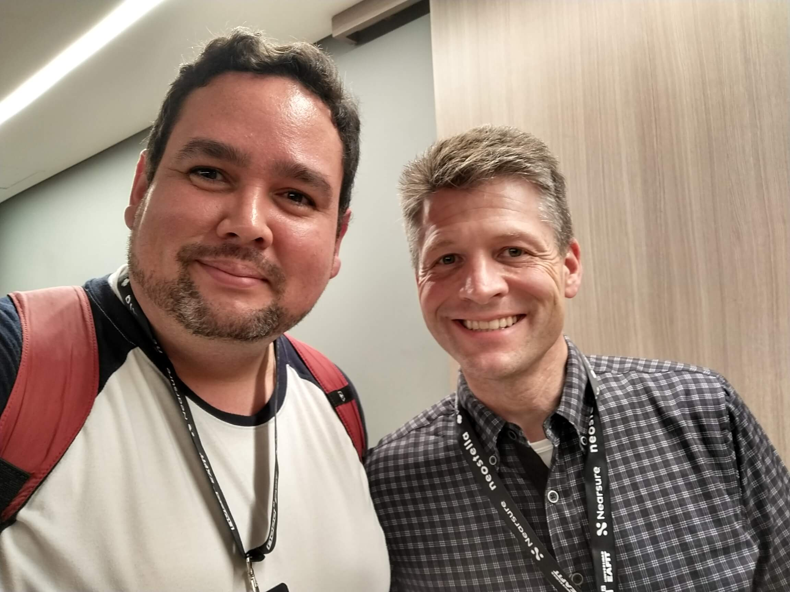
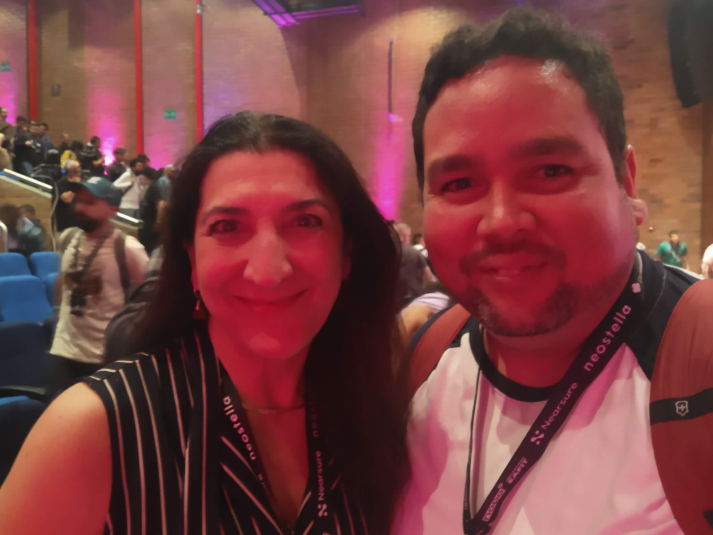
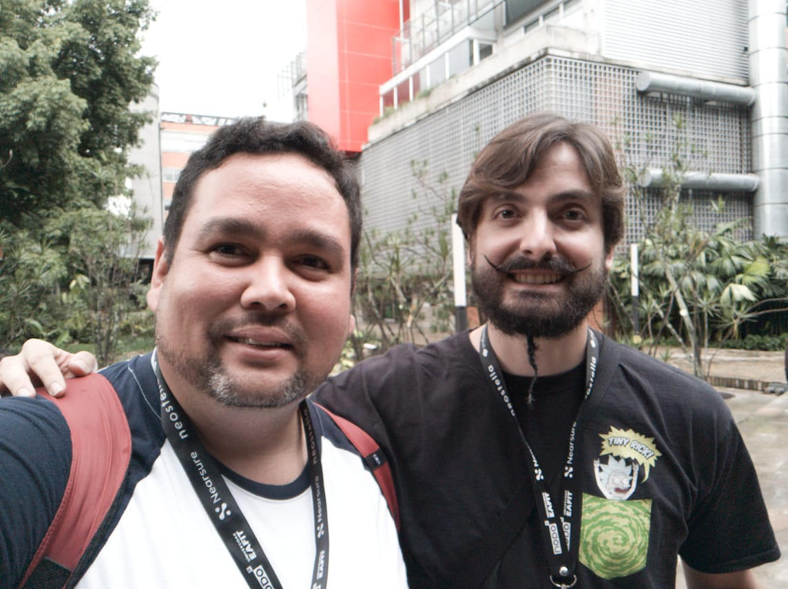

Yo
Quizá no me conoces y debo presentarme. Mi nombre es Andrés Pérez, soy voluntario en Python Barranquilla1, co-organizador2, soy esposo de una y padre de tres3, con más de una década en la industria de la ventanería y fachadas4, específicamente en el lado del software en Emmegisoft durante los últimos 8 años5.
La idea de la PyCon
La PyCon(Conferencia de Python, de Python Conference en Inglés) era un pensamiento distante y lejano a la realidad por un largo tiempo. Pero aquellos que habían participado antes antes promovieron el deseo de ir a traves de las experiencias compartidas en conversaciones. Quería ir a PyCon Colombia --de hecho, tambien quería ir a la PyCon US-- pero era irreal dados los planes de viaje que tenia con mi familia y como el año se iba desarrollando en el trabajo. Visitaba ambas paginas de PyCon y mantuve sus tiquetes de entrada entre ceja y ceja. Revisé vuelos múltiples veces, aún hasta el punto de casi comprar tiquetes para una u otra en varias ocasiones6. No sabía que esperar o si cometer la locura. Mis mejores deseos se encontraban con pensamientos recurrentes acerca de la poca sabiduría de hacer ese gasto. Al final un suspiro concluyó la reflexión y asumí que debía esperar al proximo año.
Una Pequeña Posibilidad
Un par de meses después de este ejercicio de "ir, no ir" mi no asistencia a cualquier PyCon era clara. Pero Javier Daza --fundador de Python Barranquilla y alguien que había asistido a varios PyCons como asistente y como ponente-- mencionó la posibilidad de ser voluntario en PyCon Colombia. Me lancé a la mera idea de ir. Estábamos organizando un Meetup donde Carlos Sierra --uno de los organizadores de PyCon Colombia-- iba a hablar sobre concursos de programación. Esa noche fue genial y la idea se discutió brevemente sin mucho alboroto; para ser honesto, la posibilidad murió en mi cabeza, pensando que era poco probable.
La Llamada7
Un par de semanas después --durante un viaje de trabajo-- vi un mensaje de Javier sobre ser voluntario en PyCon. ¡Dios mío!, ¡Dios mío! --totalmente manteniendo la compostura frente a los clientes mientras corría en círculos y saltaba por dentro8-- ¡Estoy teniendo la oportunidad de participar en una PyCon!
Primer Trabajo de Voluntario
Llegué, me dieron una pulsera para ayudar a identificarme como asistente. Los organizadores trataron de darme una camiseta de voluntario, pero no había ninguna de mi talla (no es importante, pasa mucho). Y me dieron la tarea de cuidar la entrada al Auditorio principal. Me sentí como un bouncer amable. Solo tenía que verificar que todos tuvieran la pulsera y recordarles que las bebidas y la comida debían quedarse afuera. Mientras estaba de pie en la entrada, vi a Nicole Franco (la anfitriona en el auditorio 101), luego Javier vino y me la señaló y luego ella se acercó y se presentó. Esto continuó durante la mayor parte de la charla de Qumisha. La charla principal rápidamente superó todo el ruido y se volvió más difícil prestar atención a los que entraban al auditorio; afortunadamente casi todos ya estaban dentro.
Asistiendo a la Anfitriona en el Auditorio 101
Después del primer ponente principal, tuve que correr y encontrar el Auditorio 101 donde debía asistir a los ponentes y la anfitriona. Estaba tan perdido, absolutamente silencioso pero gritando por dentro: créanme, no soy incompetente, solo estoy un poco perdido en el momento. Tuvimos algunas dificultades técnicas y no sabíamos cómo estaba todo configurado. Eventualmente, llegaron otros voluntarios y con ellos, algunos del personal de EAFIT que salvaron el día. Comenzó el momento de brillar de Nicole como anfitriona; tomó la tarea asignada y manejó todo lo necesario. Esos problemas técnicos iniciales retrasaron la primera charla; lo siento Cristhian, había poco que pudiéramos hacer en ese momento para recuperar el tiempo perdido. Finalmente, recibimos un mensaje de que debíamos crear un breve resumen de cada charla y pensé: al menos haré esto bien; bueno, además de correr con el micrófono durante el tiempo de preguntas.
Luego vino Edwin Enao y ya sabíamos que el video tenía sus problemas, pero también estaba claro que el equipo de transmisión estaba usando algún tipo de software similar a OBS9. Durante los inconvenientes de la primera charla habíamos aprendido que vdo.ninja se podía usar para compartir una pantalla a través de internet y luego ser capturada por el software utilizando el enlace generado10. Su configuración también incluía una cámara PTZ para el primer plano del escenario y una cámara secundaria para hacer zoom al ponente. Todo estaba conectado a través de convertidores HDMI a NDI de birdog (la cámara PTZ ya era compatible con NDI), recopilados en un switch de red dedicado. El audio llegaba a través de una interfaz de audio y el protocolo Jack implementado por la universidad en sus auditorios. Digamos que cualquier técnico de transmisión serio que quisiera ver esto en acción habría estado encantado; y yo lo estuve. A partir de Edwin, estábamos preparados, sabíamos qué hacer en múltiples casos y estábamos dispuestos a lograr todo lo necesario para que nuestros ponentes se sintieran cómodos.
Algo a tener en cuenta, algunos ponentes eran muy exigentes con la configuración de sus máquinas. Algunos en Windows, otros en Macs y los más detallados eran los usuarios de Linux. Gustavo Angulo tenía una configuración de máquina interesante, requería algunas habilidades serias de consola para configurar la compartición de pantalla; me recordó a un artículo de Cris Titus. Su presentación fue fluida, bastante agradable ya que presentaron el problema desde un punto de vista técnico y empresarial. Gustavo Díaz tomó el lado técnico y lo atravesó como mantequilla. Luego, Andrés Pineda agregó con su presentación sobre GraphQL un poco más al tema de FastAPI que se desarrolló durante esa sesión.
Ahora, agregar un poco de locura a una tarea larga ayuda a hacerla divertida: desarrollé la teoría de que Nicole es una Jedi en la vida real. Escucha esto: ella necesitaba que el ponente la mirara para ver los pequeños papeles con avisos de tiempo de 10, 5 y 1 minuto. Ella los miraba atentamente y eventualmente ellos le devolvían la mirada. Estaba haciendo algo, no sabía qué en ese momento; ya veremos de que se trata.
Y el primer día terminó con Cristian Oña hablando sobre la automatización de pruebas de penetración con Python. Un tema que ya conocíamos de nuestro querido amigo Sergio Molinares11. No estoy olvidando a Matt Harrison como ponente principal, hablaremos más de él después.
El segundo día comenzó con ¡¡¡Cris Ewing!!! ¡Qué tipo tan increíble! Hablaremos más de él también más tarde.
En el 101, las cosas estaban claras, teníamos tareas y las completamos. Se suponía que debíamos ser una anfitriona y dos asistentes, pero lo habíamos manejado sin quejas. Gerardo Vilcamiza dio un caso de uso conciso para la visión por computadora en la traducción del lenguaje de señas peruano y cómo funcionaba. Los asistentes hicieron preguntas y respuestas que resultaron fascinantes y sorprendentes. Luego, el matemático y desarrollador Alejandro Sánchez detalló múltiples estrategias para optimizar el uso del hardware al entrenar modelos de aprendizaje profundo. Fue preciso y claro en los métodos que se podían usar. Alejandro, cuando leas esto, recuerda que necesitamos ayuda para explicar transformers.
La tarde en el 101 concluyó con una lluvia de embeddings. Primero texto, luego audio y video. Juan Gómez explicó los embeddings de texto y lo que representan en el espacio vectorial de conceptos generados por LLMs. Luego, José Alcocer tomó las bases establecidas por Juan y agregó todos los detalles de los embeddings de audio y video. Sin embargo,esto fué lo más importante que presencié durante esa tarde: Como siempre, Nicole estaba siendo ignorada mientras intentaba mostrar los avisos de tiempo. Puso los papeles abajo y gesticuló silenciosamente un "mírame" mientras se apuntaba con las manos! Lo sabía. ¡Y el ponente sucumbió ante sus poderes Jedi vio los carteles de tiempo!
¡Fué un buen equipo! Mirando la foto ahora, veo que me recuerda a una buena amiga del colegio. De todas formas, gracias Nicole por la increíble experiencia y toda la enseñanza por ejemplo que hiciste. 
¡Oh, los Ponentes Principales!
Primero, debo decir que estaba absolutamente asombrado por los ponentes principales. El dominio del tema que presentaron, los puntos simples y la facilidad de acercarse a ellos y charlar! Son expertos con una gran experiencia paseando por el PyCon hablando con cualquiera que estuviera interesado. Nunca había experimentado eso y me conmovió. Esto no era único de los ponentes principales --debo decir; todos estaban fomentando conversaciones y ofreciendo consejos o guía de una manera u otra. En esencia, una comunidad vibrante que giraba alrededor de Python y de cada asistente.
Para ser honesto, no conocía a muchos en PyCon, pero todos se dieron a conocer.
Qumisha Goss
Queremos ser acogedores con los principiantes en Python Barranquilla. También tuvimos una experiencia increíble durante el pasado esfuerzo con la Secretaría de Educación del Distrito de Barranquilla. Qumisha proporcionó muchos ejemplos sobre cómo debemos fomentar el aprendizaje tanto en niños como en adultos. Le busqué después de su charla y me dio muy buenos consejos sobre cómo aliviar la frustración durante los temas difíciles de entender. Algo importante conversado es que como adultos no deberíamos pretender que entendemos todo, si reconocemos las dificultades haremos que sea fácil para todos expresar dudas y comunicar efectivamente el proceso de comprensión mientras resolvemos juntos las dudas.
 Aquí hay una linda foto, un poco fuera de foco, pero un buen recuerdo. Me encanta cómo la luz cae justo alrededor de su cabeza.
Matt Harrison
Debo confesar que encuentro intimidante a los escritores de libros en el sentido de que requiere una gran determinación, enfoque, persistencia y experiencia en el tema de su libro. Esa misma experiencia es lo que hace valioso el libro --al menos en el mundo de la tecnología-- para los lectores. Escuchamos cómo debemos convertirnos en expertos para aprovechar al máximo las herramientas en nuestras manos, que nada supera la experiencia y la comprensión profunda de la materia. Todo esto solo viene con la práctica y el estudio y no hay atajos para llegar allí. Eso es lo que aprendimos de Matt, no es la IA la que nos reemplazará, sino las personas que las sepan utilizar.
 Una bonita foto en el escenario. ¿No parecen un buen equipo de padre e hija?
Cris Ewing
Realmente no sé por qué, pero la charla de Cris resonó tanto en mis pensamientos. Estaba impresionado, conmovido y motivado. Describió su viaje desde los estudios de música hasta la informática y Python mientras compartía pequeños bits de teoría musical y pequeñas lecciones que nos empoderarán para ser mejores personas y programadores. Tuvimos una agradable conversación sobre la gracia y cómo podemos dejar ir algunos de nuestros rasgos perfeccionistas otorgando un poco de ella a nosotros mismos y a los demás. Me encanta cómo describió a la Comunidad de Python de Colombia a los organizadores cuando le preguntaron cómo le había ido a lo largo del día; parafraseando: Es una increible comunidad, ellos me detienen, hablan conmigo, me han agradecido por mi charla y me siento recargado con todo esta maravillosa energia.
 ¿No te gustaría hablar con este tipo alegre? (A la derecha, por cierto)
Van Lindberg
Recuerdo estar cerca de Van y Matt durante la foto grupal del primer día, y escuché cuando Van mencionó que esperaba que su charla no se superpusiera demasiado con la de Matt. Y felizmente no lo hizo. Van dio una clase magistral en realidad/razonabilidad alrededor de muchos escenarios, desde los más apocalíticos de IA --olvidense de terminator y Skynet-- hasta los más amigables. Habló sobre el estado actual de los avances, teoría de computación y correlacionó eso con los posibles futuros de IA que podía ver. Coincidió con Matt en que necesitamos estar preparados para aprovechar al máximo la IA como la herramienta que es.
 Van, gracias por dejarme probar tus Apple Vision Pros. Realmente había subestimado lo increíble que es como producto.
Lorena Barba
Tuve la oportunidad de acompañar a Lorena durante sus pruebas en el escenario, ya que Javier necesitaba hacer algo más y me permitió el honor. Había hablado con ella varias veces durante el PyCon sin saber la gran profesora de ingeniería que es. Su uso de jupyter notebooks en clase, cómo prepara los cursos y su introducción a jupyter-ai fue absolutamente hipnotizante. Cuando comenzó la sesión de preguntas, la sala parecía intimidada. ¿Qué podrían preguntar las personas? Su presentación fue fuerte y clara, pero la sala superó sus miedos y las preguntas comenzaron a fluir.
 Es brillante, hace grandes preguntas, es una increíble oyente y una asombrosa profesora de ingeniería (aeronáutica).
Sebastián Ramírez
No sabíamos si escuchamos a un ponente principal o a un show de comedia. Fue magnífico y extremadamente rápido. Si quieres deshacerte de tus excusas y algunas preconcepciones, solo escucha su charla (una vez que se publique). Con suerte, tendrán buenos subtítulos para los hablantes de inglés ya que habló en español y la velocidad del sonido.
 Sí, ese soy yo tratando de no ser el tipo de la boca espumosa12.
Lo que Me Llevo a Casa
He llevado a casa un profundo deseo de fomentar el mismo espíritu de PyCon en todas nuestras reuniones de Python Barranquilla. Hacer las preguntas correctas, promover conversaciones (técnicas y personales), facilitar el aprendizaje y aliviar la frustración son todas lecciones que me esfuerzo por poner en práctica.
Sé lo que tengo que hacer para seguir aprendiendo y lo haré. Tengo un par de objetivos en mente, pero no los compartiré aquí. Me aseguraré de compartirlos en la reunión de Python Barranquilla como metas inteligentes durante nuestras sesiones de planificación.
Enormes Gracias
Estoy extremadamente agradecido con Javier Daza, quien es el fundador de Python Barranquilla. Me ha empujado un poco a veces a poner cosas en práctica y muchas otras veces cuando algunos problemas en el sitio web pybaq.co que tengo pendientes requieren acción. Esos suaves empujones nos ayudan a romper la monotonía y me permitieron romper la procrastinación.
Otras muchas gracias a Sergio Orozco, quien siempre está ahí para ayudar a responder preguntas y facilitar discusiones técnicas. Es un programador competente y aún nos hace preguntas, permitiéndonos participar en su proceso de pensamiento, lo cual es una oportunidad de aprendizaje increíble.
Y absolutamente no puedo dejar de lado al equipo de PyCon. Particularmente a Carlos Sierra, quien nos visitó en Python Barranquilla y estuvo dispuesto a permitirme asistir como voluntario. No sabía qué hacer al principio, pero todo fue mucho más de lo que esperaba.
Principalmente contribuyendo a blogs, algo de mantenimiento del sitio web y transmisión.↩
Quizás una exageración, pero es mi blog y puedo decir lo que quiera.↩
La expresión "esposo de una" se siente innecesaria pero suena bien en mi cabeza.↩
Diseño, estimación, generación de listas de materiales y fabricación de ventanas, puertas y fachadas basadas en perfiles de aluminio, PVC y acero.↩
¿Sabes algo sobre el tema o quieres saber más? Me encanta hablar de eso, contácteme, estaré interesado en hablar mucho sobre ello.↩
Por favor, no hagas compras impulsivas que puedan perjudicar tus finanzas. Respira hondo y déjalo pasar.↩
Mensaje de WhatsApp para ser precisos.↩
Si me conoces, mi tamaño y carácter, eso podría ser algo digno de ver.↩
Vmix era el software y podían transmitir desde varias fuentes.↩
Es esencialmente un proxy que facilita una conexión WebRTC entre el compartidor y el receptor. Requiere muy poco ancho de banda y lo más importante: funcionó.↩
Echa un vistazo a este meetup, fue bastante interesante.↩